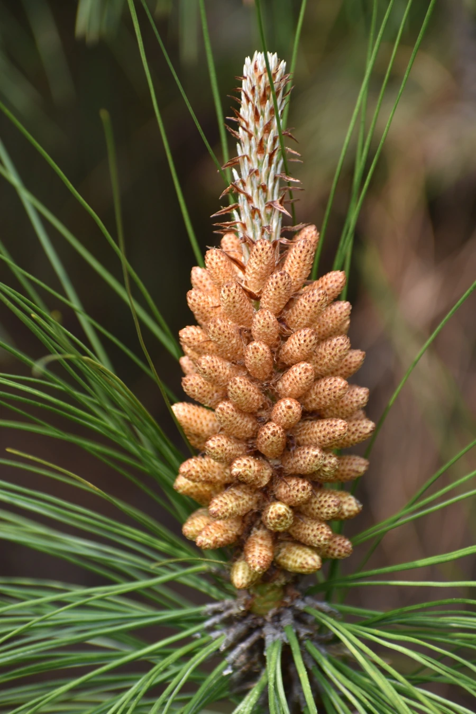

乔木 · 植物界
云南松 Pinus yunnanensis

松科松属常绿大乔木，针叶三针一束、柔而下垂，是云南高原分布最广的森林树种，耐旱耐瘠、生长迅速。
- 分类
- 门裸子植物门纲松柏纲目松柏目科松科属松属
- 栖息环境
- 海拔 1000–2800 米的山地，强阳性，耐干旱瘠薄，常成片成林
- 地理分布
- 中国云南、四川西南部、贵州西部、广西西部与西藏东南部
- 保护级别
- IUCN 暂无评估；分布广、数量大，但天然林受采伐与火灾影响
物种志
云南松为常绿乔木，高可达 30 米，树皮红褐色并呈不规则鳞片状剥落，小枝粗壮、微下垂。针叶三针一束，长 15–30 厘米，细柔下垂，叶鞘宿存。雄球花簇生，雌球花单生或双生，球果卵状圆锥形，长 4–10 厘米，成熟时褐色，种鳞张开后种子散落，种子具翅。
本种分布于云南、四川西南部、贵州西部、广西西部与西藏东南部，生于海拔 1000–2800 米的山地，是云南高原最主要的针叶林建群种。它强阳性、耐干旱瘠薄，能在贫瘠的酸性红壤与石砾坡地上成林，且更新能力强，常成为火烧迹地与撂荒地的先锋树种。木材可供建筑、矿柱与造纸，树干可割取松脂，松针可提取芳香油。云南松林同时也是长江与珠江上游重要的水源涵养林。
形态与习性
- 株高可达 30 米，树皮红褐色鳞片状剥落
- 针叶三针一束，长 15–30 厘米，细柔下垂
- 花期3–4 月，雄球花黄色
- 球果成熟10–11 月，球果卵状圆锥形
- 光照强阳性，不耐庇荫
- 水分耐干旱瘠薄，不耐长期水涝
- 主要用途建筑与矿柱用材、割取松脂、水源涵养
趣味知识
- 云南松的针叶三针一束且柔软下垂，与两针一束的油松、马尾松容易区分。
- 它被云南林区称为“飞松”，因为种子带翅，可随风飞散到撂荒地上自然更新。
- 云南松是荒山造林的先锋树种，飞机播种造林曾在滇中高原大面积应用。
- 它的树干可割取松脂，是生产松香与松节油的重要原料。